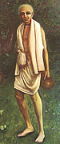

|

|
SANATANA
GOSWAMI, the elder brother of Srila Rupa Goswami, was the seniormost among
the six Goswamis of Vrndavana. At Varanasi, Lord Caitanya Mahaprabhu instructed
him in detail about the science of devotional service. Lord Caitanya sent
Srila Sanatana Goswami to Vrndavana and gave him a fourfold mission: to
uncover the lost sites of Krsna's pastimes, to install Deities of the Lord
and arrange for Their worship, to write books on Krsna consciousness, and
to teach the rules of devotional life. Srila Sanatana Goswami, along with
Srila Rupa Goswami, fulfilled all four parts of this mission. (See Sri Caitanya-caritamrta, Adi- lila 10.84, Madhya-lila 1.35, Madhya-lila chapters 20-24, and Antya-lila chapter 4.) |
|
| © 2002-2004 ISKCON |